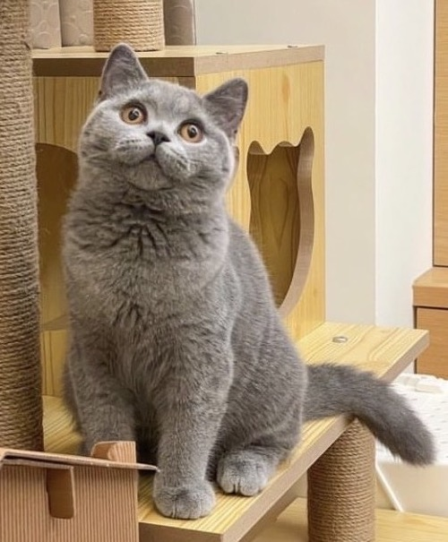
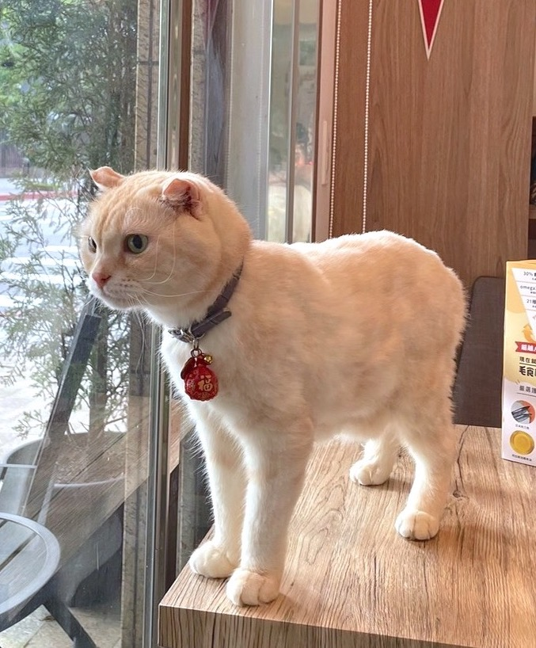

|
小叮噹 (英國短毛貓British Shorthair) |
|
|---|---|
|  | 是歐洲短毛貓和美國短毛貓的對應品種。英國短毛貓是主人的良伴，易於適應城市或鄉村的生活。英國短毛貓和其他的貓和狗相處和諧。它精力充沛、貪玩而且非常有愛心，但並不給人添麻煩。這種能適應惡劣環境的品種要到 2 到 3歲時才性成熟。它的發育開始得也相對晚。每週一次梳理毛髮即可。但在脫毛季節每天一次的梳理是必要的。 |
| 性格：恬靜、溫馴，易於相處。看似泰迪熊。 | |
|
鍋巴 (蘇格蘭摺耳貓Scottish Fold) |
|
|  | 是一種耳朵有基因突變的貓。這種貓在軟骨部份有一個摺，使耳朵向前屈摺，並指向頭的前方。由於這貓種最初在蘇格蘭發現，所以以牠的發現地和身體特徵而命名。其後，這貓種在美國繼續繁殖，並演生成為今日的多個品種。現時蘇格蘭摺耳貓有以下兩對不同的特徵：長毛貓種及短毛貓種，及摺耳和豎耳貓種。 |
| 性格：像天使，溫柔婉約又善解人意。 | |